kinetics of bodies/relative acceleration
Rigid-Body Kinematics
2025-11-30
1. Relative Acceleration (on Inertial Frames)
1.1. Derivative of Velocity
Starting with the relative velocity relation between two points \(P\) and \(Q\) on a rigid body \[ \boldsymbol{v}^p = \boldsymbol{v}^q + \boldsymbol{v}^{p/q} \]
we differentiate this with respect to time, giving \[ \frac{d\boldsymbol{v}^p}{dt} = \frac{d\boldsymbol{v}^q}{dt} + \frac{d\boldsymbol{v}^{p/q}}{dt} \]
where \[ \boldsymbol{v}^{p/q} = \boldsymbol{\omega} \times \boldsymbol{r}^{p/q} \]
This is known as the “the relative acceleration relation”.
1.1.1. the “dot” notation
In the dot notation the relative acceleration relation becomes \[ \dot{\boldsymbol{v}}^p = \dot{\boldsymbol{v}}^q + \dot{\boldsymbol{v}}^{p/q} \]
where time derivative of velocity is replaced with acceleration as \[ \boldsymbol{a}^p = \boldsymbol{a}^q + \dot{\boldsymbol{v}}^{p/q} \]
The time derivative of the relative velocity term is expanded \[ \dot{\boldsymbol{v}}^{p/q} = \dot{\boldsymbol{\omega}} \times \boldsymbol{r}^{p/q} + \boldsymbol{\omega} \times \dot{\boldsymbol{r}}^{p/q} \]
but \(\dot{\boldsymbol{r}}^{p/q} = \boldsymbol{v}^{p/q} = \boldsymbol{\omega} \times \boldsymbol{r}^{p/q}\), then
\[ \dot{\boldsymbol{v}}^{p/q} = \boldsymbol{\alpha} \times \boldsymbol{r}^{p/q} + \boldsymbol{\omega} \times \boldsymbol{\omega} \times \boldsymbol{r}^{p/q} \]
where \(\boldsymbol{\alpha} = \dot{\boldsymbol{\omega}}\) represents the angular acceleration vector.
1.1.2. the relative acceleration relation (on inertial frames)
Substituting the derived terms we get \[ \boldsymbol{a}^p = \boldsymbol{a}^q + \boldsymbol{\alpha} \times \boldsymbol{r}^{p/q} + \boldsymbol{\omega} \times \boldsymbol{\omega} \times \boldsymbol{r}^{p/q} \]
This expression is slightly more complicated relative to it’s velocity counterpart, but is managable (compared with the expression that will arise from using non-inertial frames).
1.2. Examples
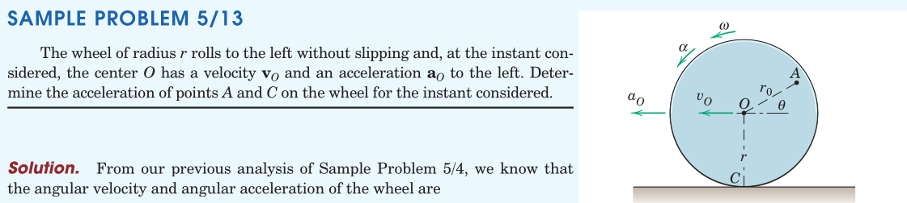
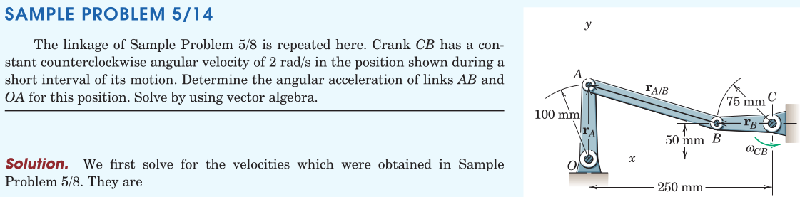
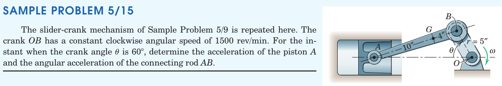
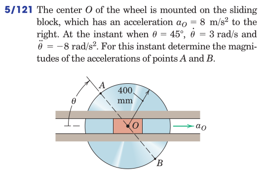
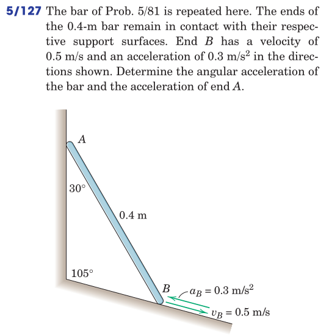
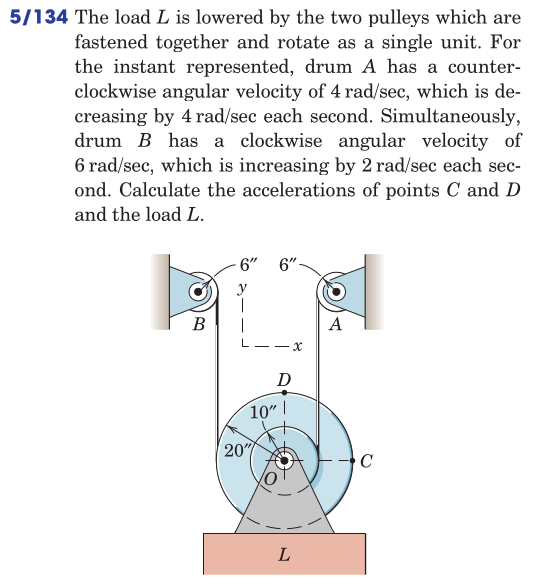
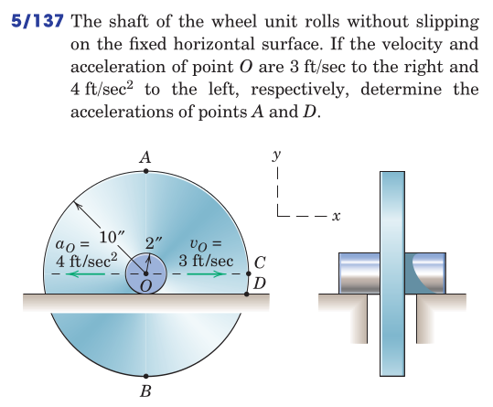
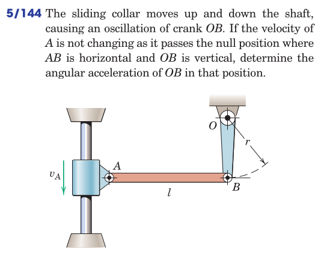
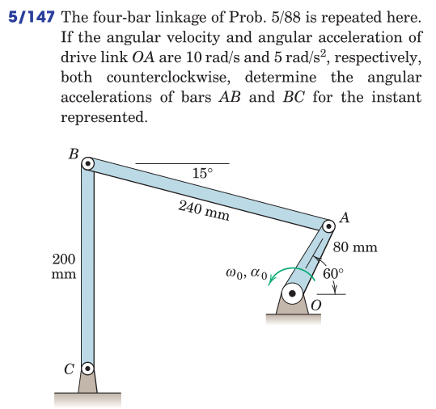
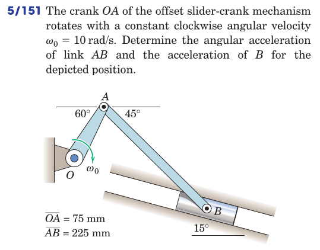
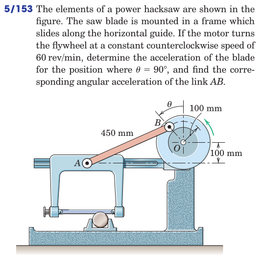
2. Relative Acceleration (on non-Inertial Frames)
When a coordinate measurement device (system) is mounted on a moving part (for example, a disk rotating about its centroid), it records motion relative to the disk.
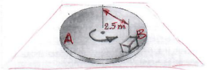
[freehand top view depiction of a cube sliding on the disk surface. Unit vectors \(\boldsymbol{e}_1\) and \(\boldsymbol{e}_2\) rotate with the disk. Points \(B\) and \(B'\) are instantaneously coincident, where \(B\) is on the disk and \(B'\) is on the block that starts sliding on the disk surface.]
How can the velocity of the block relative to the disk be expressed?
2.1. Non-Inertial Frames
The use of rotating frames and rotating unit vectors greatly facilitate problems in which connecting pins slide in guide slots.
[freehand depiction of two bodies connected at a point via a pin sliding in a guide slot cut into one of the bodies. Two points \(A\) and \(P\) share a common location instantaneously. \(A\) is on the pin, while \(P\) is on the slot.]
The relative position vector from \(P\) and \(A\) can be expressed in both the non-inertial as well as the inertial frames as \[ \hat{\boldsymbol{r}}^a - \hat{\boldsymbol{r}}^p = \hat{\boldsymbol{r}^{a/p}} = \boldsymbol{r}^{a/p} \]
where \(\boldsymbol{r}^a = X^a \boldsymbol{i} + Y^a \boldsymbol{j}\) and \(hat{\boldsymbol{r}}^a = \bar{x}^a \boldsymbol{e}_1 + \bar{y}^a \boldsymbol{e}_2\)
For the given instant \(\boldsymbol{r}^{a} = \boldsymbol{r}^{p}\) which is equivalent to \(\boldsymbol{r}^{a/p} \equiv \boldsymbol{r}^{rel} = \boldsymbol{0}\).
2.1.1. Motion of the Unit Vectors
Inspect the scene below by using unit vectors \(\boldsymbol{i}\) and \(\boldsymbol{j}\) attached to the inertial (\(XY\)) system, while unit vectors \(\boldsymbol{e}_1\) and \(\boldsymbol{e}_2\) rotate with the moving (\(xy\)) frame.
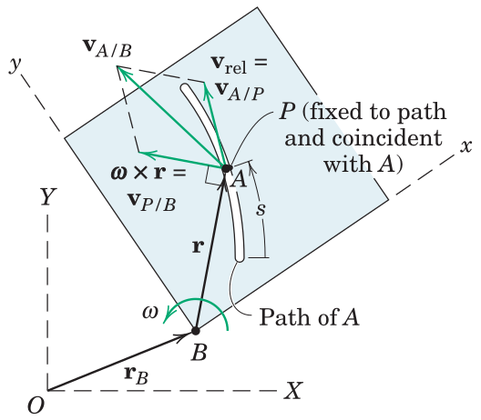
Due to the frame rotation, the embedded unit vectors change orientation by differential amounts \[ d\boldsymbol{e}_1 = d\theta \boldsymbol{e}_2,\hspace{1em} d\boldsymbol{e}_2 = -d\theta \boldsymbol{e}_1 \]
2.1.2. Inertial Position Vectors
Relative motion of points \(A\) (attached to the pin moving in the slot) and \(P\) (coincident point on the slot) will be studied. The locators of \(P\) and \(A\) in the inertial (\(XY\)) frame are
where \(\bar{\boldsymbol{r}}^\square = \bar{x}^\square \boldsymbol{e}_1 + \bar{y}^\square \boldsymbol{e}_2\) is a position vector relative to the moving (non-inertial) frame.
Note that, we can replace the \(\square\) with any of the point labels, e.g. \(a\) or \(b\).
2.2. Velocity Analysis
Here we study,
- derivative of the Position Vector to \(P\), \(\boldsymbol{r}^p\)
- derivative of the Position Vector to \(A\), \(\boldsymbol{r}^a\)
2.2.1. Derivative of the Position Vector to \(P\)
At \(P\) the inertial velocity measurement reads \[ \dot{\boldsymbol{r}}^p = \dot{\boldsymbol{r}}^b + \bar{x} \dot{\boldsymbol{e}}_1 + \bar{y} \dot{\boldsymbol{e}}_2 \]
The terms \(\dot{\boldsymbol{e}}_1\) and \(\dot{\boldsymbol{e}}_2\) can be found from the unit vector differentials stated previously, as \[ \dot{\boldsymbol{e}_1} = \omega \boldsymbol{e}_2,\hspace{1em} \dot{\boldsymbol{e}_2} = -\omega \boldsymbol{e}_1 \]
The angular velocity of the body is \(\boldsymbol{\omega} = \omega \boldsymbol{k}\) from which we induce the relations \[ \dot{\boldsymbol{e}_1} = \boldsymbol{\omega} \times \boldsymbol{e}_1,\hspace{1em} \dot{\boldsymbol{e}_2} = \boldsymbol{\omega} \times \boldsymbol{e}_2 \]
by the use of which the inertial velocity of \(P\) can be expressed as \[ \dot{\boldsymbol{r}}^p = \dot{\boldsymbol{r}}^b + \boldsymbol{\omega} \times \bar{\boldsymbol{r}}^p \]
or equivalently as \[ \boldsymbol{v}^p = \boldsymbol{v}^b + \boldsymbol{\omega} \times \bar{\boldsymbol{r}}^p \]
2.2.2. Derivative of the Position to \(A\)
At \(A\) the inertial velocity measurement reads \[ \dot{\boldsymbol{r}}^a = \dot{\boldsymbol{r}}^b + \dot{\bar{x}} \boldsymbol{e}_1 + \dot{\bar{y}} \boldsymbol{e}_2 + \bar{x} \dot{\boldsymbol{e}}_1 + \bar{y} \dot{\boldsymbol{e}}_2 \]
where the additional term \(\dot{\bar{x}} \boldsymbol{e}_1 + \dot{\bar{y}} \boldsymbol{e}_2\) is identified as \(\boldsymbol{v}^{a/p} \equiv \boldsymbol{v}^{rel}\).
Furthermore, from the derivation for point \(P\) we have \[ \bar{x} \dot{\boldsymbol{e}}_1 + \bar{y} \dot{\boldsymbol{e}}_2 \equiv \boldsymbol{\omega} \times \bar{\boldsymbol{r}}^p \]
Finally the inertial velocity of \(A\) can be expressed as \[ \dot{\boldsymbol{r}}^a = \dot{\boldsymbol{r}}^b + \boldsymbol{\omega} \times \bar{\boldsymbol{r}}^a + \boldsymbol{v}^{a/p} \]
or equivalently as \[ \boldsymbol{v}^a = \boldsymbol{v}^b + \boldsymbol{\omega} \times \bar{\boldsymbol{r}}^p + \boldsymbol{v}^{a/p} \]
2.3. The Total Differentiation of a Non-Inertial Vector
It is observed from the above that the when the time derivative of a position vector expressed in a non-inertial frame translating with \(\boldsymbol{r}^b\) and rotating with \(\boldsymbol{\omega}\) is taken, an additional term (\(\boldsymbol{omega} \times \bar{\square}\)) appears. This is not specific to position vectors only but in fact any vector written in terms of non-stationary unit vectors possess the same quality.
This law is used in taking the time derivative of velocity expressed in a non-inertial frame…
2.4. Examples


3. Review
From Hibbeler, Engineering Mechanics: Dynamics: Chapter 16: